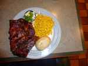
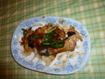
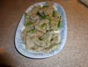

Beef in Oyster Sauce

Ingredients
- 450g(1 lb) beef, rump or fillet
- 1 green pepper, cut into wedges
- 75-90 ml(506 Tbsp) vegetable or corn oil
- 3-4 garlic cloves, peeled and finely chopped
- 3-4 spring onions, cut into 2.5cm(1") sections, white and green parts separated
- 15 ml(1 Tbsp) Shaoshing wine or medium or dry sherry(optional)
- sesame oil to taste (optional)
Marinade
- 1.25 ml(1/4 tsp) salt
- 1.25 ml(1/4 tsp) sugar
- 10 ml(2 tsp) dark soy sauce
- 6 turns pepper mill
- 10 ml (2 tsp) Shaoshing wine or medium dry sherry(optional)
- 5 ml (1 tsp) potato flour or corn flour
- 15-30 ml(1-2 Tbsp) water
- 10 ml (2 tsp) vegetable or corn oil
Sauce
- 5 ml (1 tsp) potato flour
- 90 ml (6 Tbsp) clear stock or water
- 37.5 ml - 45 ml (2-1/2-3 Tbsp) oyster sauce
Method
- Wash the beef, pat dry, cut across the grain into rectangular slice, about 2.5x4 cm (1x1-1/2") and 6mm(1/4") thick. Put in a fairly large bowl and mix with marinade except the potato flour and water.
- Sprinkle with potato flour, add 15ml (1 Tbsp) of the water and stir in the same direction. Coat the beef until it is too difficult to continue, then add the remaining water and stir again. This process will make the beef velverty and tender when cooked. Leave to marinate in the refrigerator for 30 minutes. Blend in the oil.
- Prepare the sauce:put the potato flour in a small bowl, stir in the water or stock to blend thoroughly and then add the oyster sauce.
- Heat the wok over high heat until smoke rises. Add 60-75 ml (4-5 Tbsp) of the oil, swirl round the work; this prevents the wok from sticking. Remove from the heat, then add the garlic, ginger and the white spring onion in rapid succession. Stir several times to release their aroma and then ad the beef. Sliding the wok or metal spatula to the bottom of the wok, flip and toss for up to 1 minute until the beef is 90% grey. Splash in the wine or sherry around the side of the wok (above the beff) while it sizzles, continue to stir. Remove to a warm plate (if possible) as soon as the sizzling has stopped.
- Wash the wok, dry over the heat and wipe with paper towel to ensure there is no water droplets left. Heat the wok until smoking, add the remaining 1 Tbsp of oil, then the pepper wedges, stir-fly for a minutes.
- Lower the heat, add the sauce mixture and bring to boil. As soon the bubbles appear, return the beef, add the green spring onion. Stir the pepper and beef mixtures until hot. Remove to a warm serving plate and serve immediately. Sprinkle with sesame oil a the the table if desired.
top
Kung Po Chicken
Ingredients
- 350g (12 oz) chicken breast meat, diced
- 60 ml (4 Tbsp)vegetable or corn oil
- 2-3 long about 7.5 cm [3"], 4-5 smaller red dried chillies, seeded and cut into pieces
- 2 cloves garlic, peeled and sliced diagonally
- 15 ml (1 Tbsp) Shaoshing wine or medium dry sherry
- 3 spring onions, cut into small rounds
Marinade
- 2 ml (1/3 tsp) salt
- 10 ml(2 tsp) light soy sauce
- 10 ml(2tsp) Shaoshing wine or medium dry sherry
- 5 ml (1 Tbsp) egg white, lightly beaten
Sauce
- 15 ml (1 Tbsp) dark soy sauce
- 15-30 ml(1-2 Tbsp) chilli sauce
- 10 ml(2 tsp) sugar
- 10 ml(2 tsp) rice or white wine vinegar
- 7.5 ml (1 1/2 tsp) cornflour
- 90 ml (6 Tbsp) clear stock or water
Method
- Cut the chicken breast into two or three strips (depending on the size. Then cut into cubes about 1 cm(1/2") square. Marinate in a bowl with the marinade ingredients for 15-30 minutes.
- Heat a wok until smoking, remove from the heat, then add in the dried chilli, stir the garlic and ginger, fry until aromatic.
- Add the chicken, turn and toss right to the bottom of the wok until the chicken changes colour. Splash in the wine or sherry around the side of the wok, stirring and tossing continuously.
- Add the spring onions and fry for another 3-45 seconds. The chicken should be cooked by now.
- Add the well-stirred sauce and continue to stir while it thickens.
- Add the peanuts, stir to blend well, then remove onto a serving plate and serve immediately.
top
Ants Climbing a Tree
Ingredients
- 75 g (3oz) cellophane noodles (bean thread)
- 175 g (6 oz) loin pork or mince pork
- 60 ml (4 Tbsp) groundnut oil/corn oil
- 3 cloves garlic, peeled and finely chopped
- 3-4 sprong onions, cut diagonally into long slices, white and green parts separated
- 15-22.5 ml (1-1/2 Tbsp) hot soy bean sauce or chilli sauce
- 10 ml (2 tsp) Shaoshing wine or medium dry sherry
- 250 ml (8 fl oz) clear stock
- salt to taste
- light or dark soy sauce to taste
Marinade
- 2.5 ml (1/2 tsp) salt
- 15 ml (1 Tbsp) dark soy sauce
- 4 turns black pepper mill
- 5 ml (1 tsp) Shaoshing wine or medium dry sherry
- 2.5 ml (1/2 tsp) potato flour
- 15 ml (1 Tbsp) water
- 10 ml (2 tsp) sesame oil
Method
- Put the cellophane noodles in a large bowl and pur over about 1 litre ( 1-3/4 pt) boiling water. Leave to soak preferably covered for 20 minutes.
- Finely chop or mince the pork (leave this step if using mince port) and put in a bowl.
- Prepare the marinade: add the salt, soy sauce, pepper, wine or sherry, potato flour and water to the pork. Stir vigorously in the same direction for 1-2 minutes. Blend in the sesame oil.
- Drain the cellophane noodles and make a few cuts with a pair of scissors to make them shorter for easier handling.
- Heat a wok over high heat until smoke rises. Add the oil and swirl it around. Add the garlic, then the white spring onion. As they sizzle, add the hot soy bean paste or cilli sauce and stir a couple of times. Add the pork and, sliding the wok scoop or metal spatula to the bottom of the wok, turn and toss for 1 minute, breaking up any lumps at the same time. Splash in the wine around the side, of the wok, continuing to break up any lumps.
- When the sizzling dies down, add the noodles, stir and fold blend, add the stock, bring to boil, add the salt and soy sauce to taste, then lower the heat and continue to cook, covered, for about 5 minutes.
- Remove the wok cover. Most of the stock should have been absorbed. Add the green spring onion, then scoop onto a warm serving dish.
- Arrange the pork on top of and around the noodles. Serve hot.
top
Sichuan Chicken

Ingredients
- 2 tsp (10 ml) shredded root ginger
- 1 tsp (5 ml) Sichuan peppercorns
- 2 Tbsp (30 ml) Shaoshing wine or dry sherry
- 6 chicken thighs, skinned (about 1 lb 4 oz or 579 g) or diced thighs
- 225 g (8 oz) cashew nuts, roasted
- 1/4 cucumber, diced with the centre removed
- 1 spring onion, chopped
- 1/2 tsp salt
- 2 tsp (10 ml) sugar
- 1 Tbsp (15 ml) light soy sauce
- 1 Tbsp (15 ml) wine vinegar
- 3 Tbsp (45 ml) sesame paste (sauce) or peanut butter
- 1 tsp (15 ml) chilli
Method
- Mix together half the ginger, the peppercorns, wine and marinate the chicken for 30 minutes. Place in an ovenproof dish and steam for 20-25 minutes, then remove the bones and dice the meat
- Place the diced chicken, cashew nuts, cucumber, remaining ginger and spring onion in a mixing bowl.
- Mix together the salt, sugar, soy sauce, vinegar and sesame paste peanut butter in a bowl and then toss the chicken mixture in the sauce. Arrange on a serving dish and serve cold garnished with cucumber, with the chilli oil sprinkled on top
top
Sweet and Sour Fish
Ingredients
- 454 g (1 lb) white fish steaks (approx, 75-100g/3-4 oz each
- 5 ml (1 tsp) salt
- 250 g (1/2 lb) corn flour
- 1 egg, beaten
- 90 ml (6 Tbsp) corn oil
- 2 spring onions, finely chopped
Sauce
- 1cm(1/2") piece of ginger, finely shredded
- 30 ml (2 Tbsp) sugar
- 45 ml (3 Tbsp) rice vinegar
- 90 ml (6 Tbsp) hot chilli Sichuan bean sauce
- 7.5 ml (1/2 Tbsp) potato flour
- 30 ml (2 Tbsp) water
- 45 ml (3 Tbsp) orange juice
- 15 ml (1 Tbsp)chinese wine or dry sherry
- 15 ml (1 Tbsp) light soy sauce
Method
- Season the fish steaks with salt and pepper, dip in the beaten egg, and then coat with corn flour. Remove excess corn flour before frying.
- Heat the oil in the wok or a shallow frying pan until smoking and fry the fish for 2 minutes. Do not attempt to turn the fish over too soon as it will break very easily. Turn over gently to cook the other side. Remove and keep warm.
- Stir-fry the spring onions, garlic, ginger until aromatic. Add the chicken stock and wine and the rest of the ingredients which has been mixed together in a bowl and bring to the boil stirring at the same time.
- Lower the heat and pour the sauce over the cooked fish, then serve immediately.
top
Ma Po Bean Curd

Ingredients
- 2 cakes of bean curd
- 100 g (4 oz) minced pork
- 15 ml(1 Tbsp) Hot bean paste
- 30 ml(2 Tbsp) corn or vegetable oil
- 1.25 ml(1/4 tsp) ground sichuan pepper
- 5 ml (1 tsp) sugar
- 1 spring onion, cut into small rounds (green part only)
- 150 ml (5 fl oz) water or chicken stock
- 3 garlic cloves, peeled and chopped
- 5 ml(1 tsp) Sichuan preserved vegetable, shredded, well rinsed and dried
- 5 ml(1 tsp) hot chilli oil
- 15 ml(1 Tbsp) water and 1-1/2 tsp cornflour
Marinage
- 1 ml(1/8 tsp) salt
- 1.25 ml (1/4 tsp) sugar
- 5 ml (1 tsp) light soy sauce
- 5 ml (1 tsp) dark soy sauce
- 7.5 ml (1/2 Tbsp) Shaoshing wine or medium sherry
- 5 ml (1 tsp)sesame oil
Method
- Marinate the minced pork in the marinade ingredients for 15-30 minutes
- Cut the bean curd into 1 cm (1/4") cubes.
- Heat the wok until smoking, add the 2 Tbsp of oil and fry the garlic away from the heat. This prevents it from burning. Put in the port and fry until partially cooked
- Add the Sichuan preserved vegetable, hot bean paste, light soy sauce and sugar, continuing to toss and blend well.
- Pour in the stock or water and slowly bring to boil over a moderate heat
- Thicken with corn flour and water mixture.
top